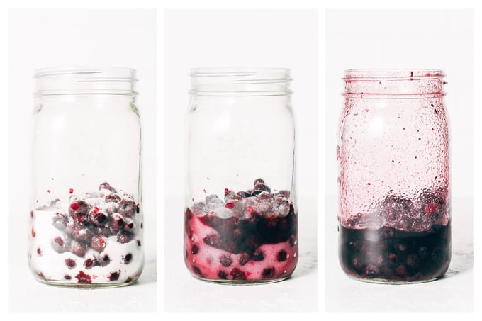
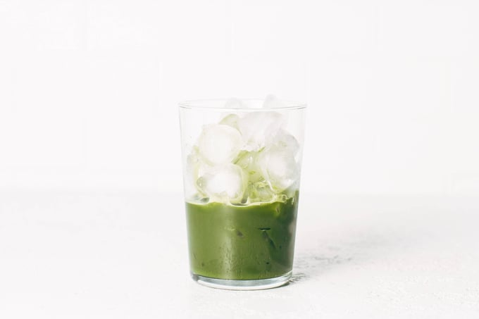
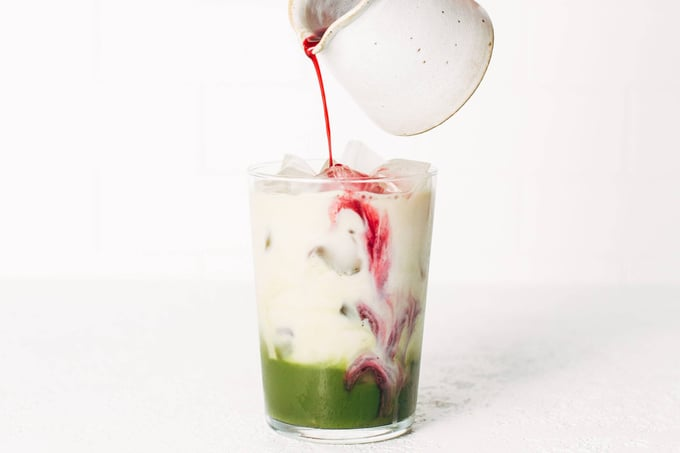

Sweet summery drink perfection! Yummy blueberry syrup mixed into a matcha oat milk latte makes for the perfect iced drink for summertime. Yum!
How To Make This Blueberry Matcha Latte
Step 1: Make the Blueberry Syrup
put frozen blueberries and sugar in a jar. And wait a few hours.
Give them a few hours in the fridge to thaw out and release their juices, and mix it all up and you have this yummy blueberry syrup.
If you want to speed the process up, add a bit of water to the jar and/or microwave it so the blueberries start to melt. You can even mash them down a bit to get them to release their juices, and as it mixes with the sugar it’ll create a little syrup that works great in this drink.
Step 2: Make your matcha
I dissolve my matcha powder in warm water by just shaking it up in a jar. I use the Jade Leaf Matcha Latte mix.
Step 3: Add the Blueberry Syrup
Drizzle that beautiful syrup right in there.
Step 4: Mix It All Up and You’re Good to Go
------------------------------------------------------------------------------------------------------------------------------------------------------------------------------Lindsay’s Notes
Hi! Just me over here, continuing my obsession over this little blueberry matcha latte!
It’s got a creamy oat milk base with a bit of concentrated matcha and a few drizzles and swizzles of a shortcut blueberry syrup that gives it the most beautiful white, green, and purple layers, and the taste of straight summertime.
I first saw this on @schoolnightvegan’s Instagram account (here is the method that inspired his video) and then quickly realized I wasn’t going to be able to wait the required two weeks for the blueberry syrup. So… I made this version instead. Frozen blueberries make the process much faster (2-3 hours!) and give you a rich, deep, blueberry-licious syrup to work with.
In comparison to fresh blueberries, frozen blueberries just have a slightly different, stronger taste to them, and that comes through in the syrup. If you want a pure, mild-tasting blueberry syrup, go for the full 2-week method! If you are like me and you have trouble waiting 2 weeks for ANYTHING, especially a drink that you urgently need, this is your perfect deliciously blueberry-flavored solution.
I am sensitive to caffeine so I wasn’t sure if this little number would be too much for me, especially having it in the afternoon. But with about a third of the amount of caffeine as a cup of coffee, I’ve found that it is the exact right amount to keep me going through the afternoon slump but still allow me to stay calm and sleepy at bedtime.
But the real reason I’m drinking this is because the flavor is sweet, summery, and perfect. Fresh blueberry, creamy oat milk, and a bit of emerald matcha are just a match made in heaven.